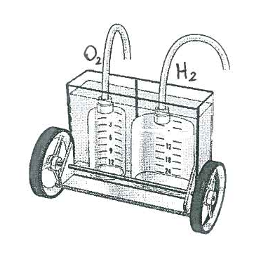
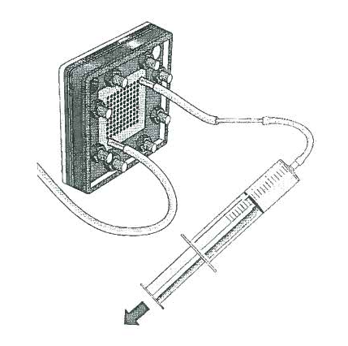

Agrupamento de Escolas Lima-de-Faria. 3 de março de 2015.
Jaime Villate
PEM: Membrana de Troca de Protões. Parecida com a película aderente de plástico usada na cozinha, mas com nano-orifícios por onde podem passar protões mas não moléculas.
A PEM encontra-se entre duas lâminas metálicas com furos (ânodo e cátodo).
A pressão dos gases empurra as moléculas contra a membrana.
No ânodo: Separação do H2. Passagem dos protões através da membrana e passagem dos electrões através do metal dos cabos e do motor
No cátodo: Separação do O2, ionização negativa pelos electrões que entram do cabo e combinação com os protões para produzir H2O.
No cátodo: As moléculas de H2O são atraídas para a membrana pela carga negativa do ânodo. Os protões separam-se e passam através da membrana. Formam-se moléculas de O2 com carga negativa que sai pelo cabo para a pilha.
No ânodo: Os protões que entram pela membrana combinam-se com os electrões que entram da pilha através do cabo, produzindo moléculas de H2.
Usando a seringa, encha o depósito com água destilada.
Retire a tampa de um dos tubos de purga. Coloque a seringa e sugue o ar até o tubo ficar cheio de água. Com os dedos feche a ponta do tubo e retire a seringa. Ponha a tampa de volta antes de libertar o tubo. Repita no outro lado da célula, tendo cuidado que o nível de água no depósito não deixa menos de meio centímetro.
Ligue as pilhas e observe como começa a sair gás para cada um dos tanques, fazendo descer o nível da água. Quando os dois tanques estiverem com mais de metade do volume com gás, desligue a pilha.
Levante o carro e, com as rodas no ar, ligue os cabos do motor à célula. O motor deverá começar a andar. Coloque o carro a andar no chão. Quando a pressão dos gases for muito baixa, o motor deixará de andar.
Já existem projectos piloto com automóveis ou autocarros.
O hidrogénio é produzido a partir do gás canalizado.
Outras possíveis fontes de hidrogénio:
O carrinho usado nestas páginas pode ser adquirido na Loja Online da Science4you: http://www.science4you.pt/loja/pt/ecoscience/fuel-cell